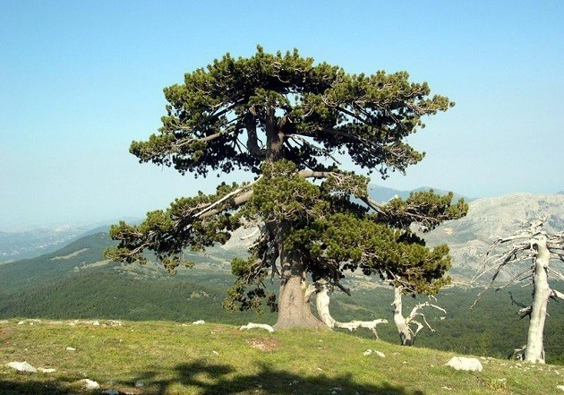

Il Pino loricato (Pinus leucodermis Ant.), elemento caratteristico nell'ambito degli habitat forestali di interesse Comunitario rientranti nella Rete Ecologica Europea Natura 2000, vive in Europa nella penisola Balcanica e in Italia in maniera naturale esclusivamente in quella parte dell'Appennino Calabro-Lucano rientrante nel perimetro del Parco Nazionale del Pollino.La storia della identificazione di questa specie è stata lunga, complessa e affascinante come il Pino loricato stesso. Le prime notizie risalgono al 1826 quando il botanico partenopeo Michele Tenore raccolse per la prima volta dei rametti di questo pino ai Piani di Pollino a circa 1850 metri di quota, ma il materiale venne confuso con altre specie affini. Solo nel 1863 il tedesco Theodor von Heldreich ritrovò sul Monte Olimpo un pino che ricordava quello del Pollino e che poi Herman Christ avrebbe a lui dedicato (Pinus heldreichii). Successivamente nel 1864 F. Antoine trovò nei territori dell'ex Jugoslavia dei pini simili a quelli trovati sul Pollino e per essi coniò il nome di Pinus leucodermis. Arriviamo quindi agli inizi del 1900 e sull'identificazione del pino del Pollino risultava esserci ancora poca chiarezza, quando nel 1905 Biagio Longo, studioso originario di Laino Borgo piccolo centro del Parco, riferisce i suoi ritrovamenti sul Pollino e sui Monti della dorsale del Pellegrino al Pinus leucodermis Antoine (1864) [o Pinus heldreichii Christ (1863)]. Per la prima volta egli conia il nome Pino loricato per la peculiarità della corteccia. Infine alla fine del XX secolo (1996) il dr. Silvano Avolio dell'Istituto Sperimentale per la Selvicoltura di Cosenza giunse alla conclusione che bisognava distinguere due forme di Pino loricato: nell'Italia meridionale, nell'ex Jugoslavia, in Albania, in Grecia e in Bulgaria si incontra il Pinus leucodermis, il Pino loricato vero e proprio, mentre in Albania, in poche zone dell'ex Jugoslavia e sul Monte Olimpo troviamo il Pinus heldreichii, o Pino di Bosnia, differente dal loricato solo per caratteristiche abbastanza sottili, difficili da cogliere da parte del comune osservatore.